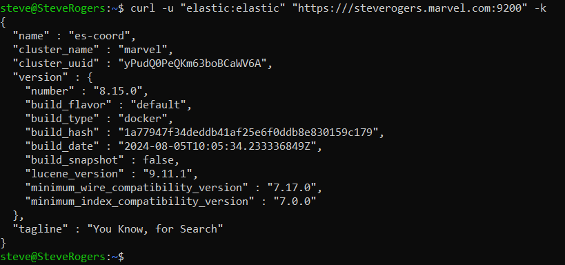
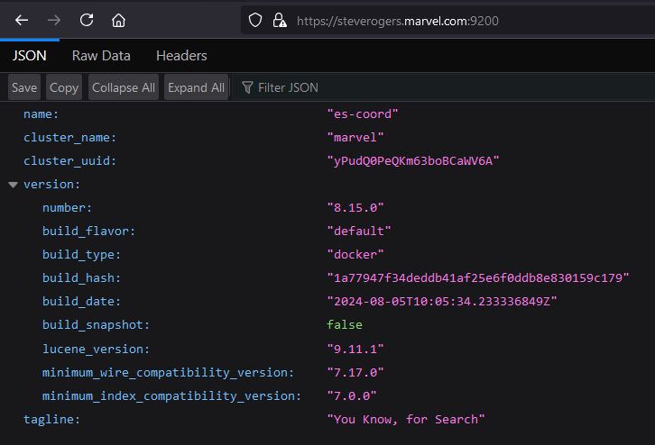
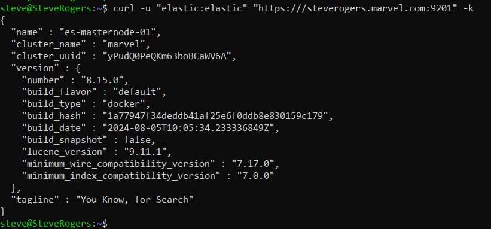
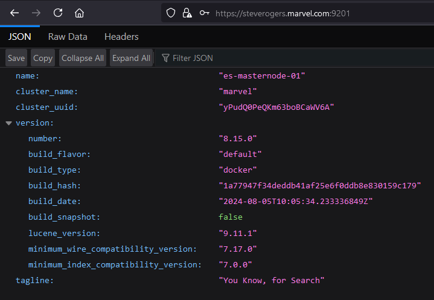
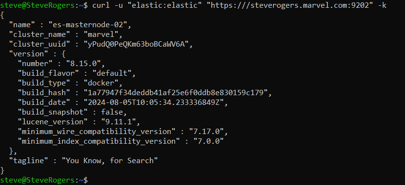
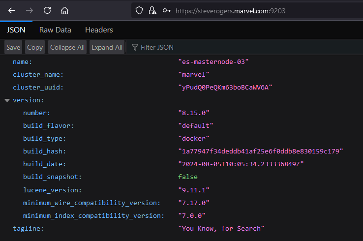
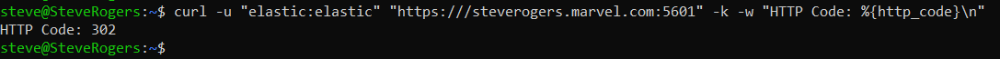
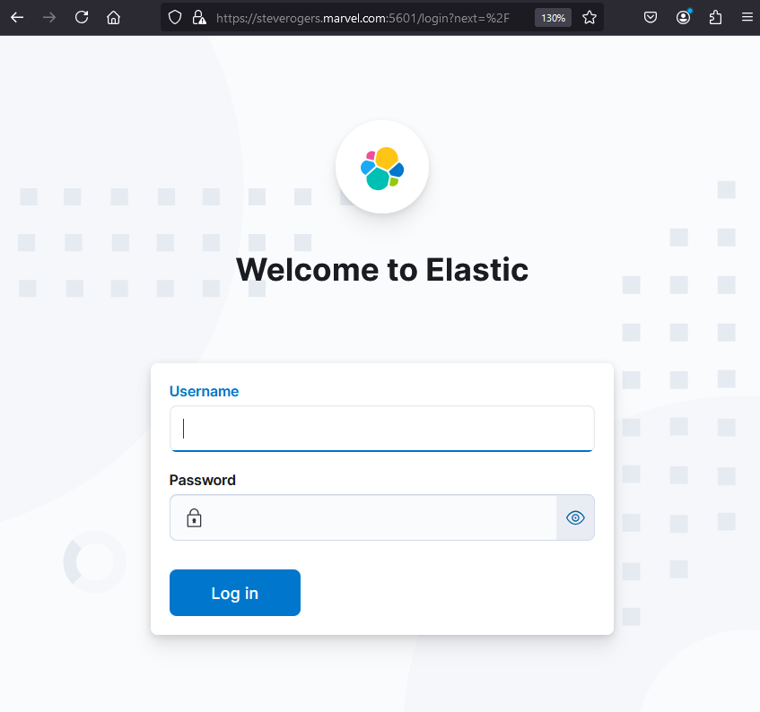
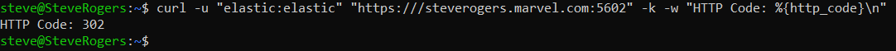
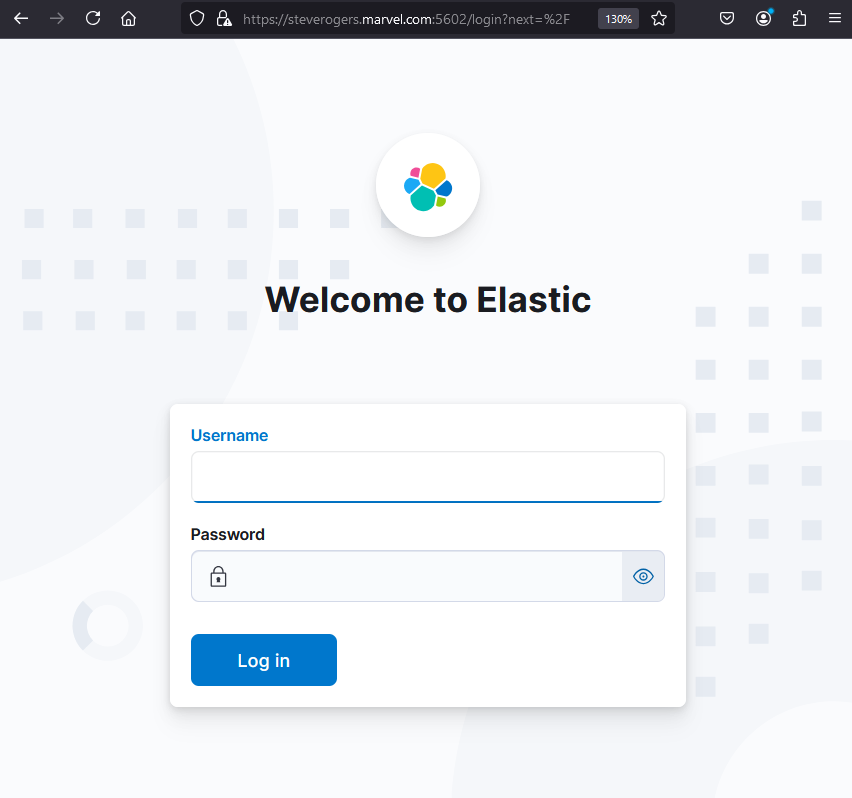

Kafka-ELK Stack with Docker: A Comprehensive Guide
1. Overview
This documentation outlines the process for setting up a multi-node ELK stack (Elasticsearch, Logstash, Kibana) using Docker, with additional containers for Zookeeper, Kafka, and a Python-based banking application. The banking app generates synthetic bank transaction data, which is sent to a Kafka topic and then ingested into Elasticsearch via Logstash. The ingested data is then visualized using Kibana dashboards.
This setup is intended to simulate a real-time streaming pipeline where a producer (banking app) pushes data to Kafka, and Logstash acts as a consumer that processes and sends the data to Elasticsearch. Kibana is used to analyze and visualize the data through customized dashboards.
2. Setup Guide for Docker Containers
2.1 Prerequisites
Before starting the setup, ensure the following are installed on your system:
- Docker: Install Docker from the official Docker website.
- Docker Compose: Install Docker Compose from the official Docker Compose installation guide.
- Git: If using
git cloneto retrieve repository files, ensure Git is installed. Download from Git SCM. - Minimum 8GB RAM
- 20GB free disk space
For users unfamiliar with Docker, basic knowledge of Linux commands and Docker is recommended.
2.2 Repository Structure
The repository TechSavvyRC/elk_docker contains the necessary files to configure and run the ELK stack, Kafka, and the Python banking app in Docker containers. Below is the structure of the repository:
Git Repository Link: https://github.com/TechSavvyRC/elk_docker.git
TechSavvyRC/elk_docker
│
├── docker-compose.yml # Main orchestration file
├── .env # Global environment variables
│
├── banking/ # Python banking app directory
│ ├── .env # Banking app environment file
│ ├── banking_app.template.py # Python script template for generating bank app
│ ├── Dockerfile # Dockerfile for the banking app container
│ ├── entrypoint.sh # Script for configuring & running the banking app
│ └── requirements.txt # Python dependencies for the banking app
│
└── logstash/ # Logstash configuration directory
├── .env # Logstash environment file
├── Dockerfile # Dockerfile for the Logstash container
├── entrypoint.sh # Script for configuring and running Logstash
└── logstash.template.conf # Logstash configuration template
2.3 Retrieve Repository Files
Manual Download
To manually download the repository files, follow these steps:
- Navigate to the repository’s GitHub page: https://github.com/TechSavvyRC/elk_docker.
- Click the Code button.
- Select Download ZIP and save the file.
- Extract the ZIP file on your local machine using your preferred tool (e.g.,
unzipor a graphical interface).
Using Git Command-Line
To clone the repository using Git, follow these steps:
- Open a terminal.
- Run the following command to clone the repository:
- Navigate into the cloned directory:
git clone https://github.com/TechSavvyRC/elk_docker.gitcd elk_dockerUsing wget
If you prefer using wget to download the repository, follow these steps:
- Open a terminal.
- Run the following command to download the repository’s ZIP file:
- Extract the ZIP file and navigate into the directory:
wget https://github.com/TechSavvyRC/elk_docker/archive/refs/heads/main.zipunzip main.zip
cd elk_docker-mainUsing GitHub Desktop
If you are using GitHub Desktop, follow these steps:
- Download and install GitHub Desktop.
- Click File > Clone Repository.
- Paste the repository URL: https://github.com/TechSavvyRC/elk_docker.git.
- Choose a local path and click Clone.
2.4 Setup Instructions
Step 1: Review .env Files
The .env files contain environment variables for each service (Elasticsearch, Kafka, Logstash, and the banking app). Ensure these files are properly configured:
- Global .env file (root directory): Contains settings such as Elasticsearch ports, memory limits, and Kafka topics.
- Logstash .env file (under logstash/): Contains Logstash-specific configurations for Elasticsearch and Kafka.
- Banking app .env file (under banking/): Contains Kafka connection details and the topics for publishing transactions.
Step 2: Modify Environment Variables (Optional)
If required, customize the values in the .env files, such as ports, memory allocation, or Kafka topics.
For example, to change the Elasticsearch port:
ES_PORT=9200 # Default port for ElasticsearchStep 3: Build the Docker Containers
The repository includes Dockerfiles for each service, and docker-compose.yml orchestrates them. To build the services, ensure Docker is running, and from the root directory, run:
docker-compose build2.5 Configuration
The docker-compose.yml file defines the services, volumes, networks, and dependencies. It will start the following services:
- Elasticsearch (Coordination and Master Nodes)
- Logstash
- Kibana
- Kafka
- Zookeeper
- Python Banking Application
Environment Variables:
- All services are configured using values from
.envfiles. - The variables ensure that Logstash consumes from the correct Kafka topics, Elasticsearch is properly secured, and the banking app connects to Kafka.
2.6 Running Docker Containers
After building the Docker containers, follow these steps to start the services:
Step 1: Start the Docker Stack
Run the following command to start the entire stack:
docker-compose up -dStep 2: Monitor the Logs
To monitor the logs for any issues, run:
docker-compose logs -fStep 3: Verify the Services
To verify the services from the Docker host machine, check the following nodes:
-
es-coord:

-
es-masternode-01:

-
es-masternode-02:

-
es-masternode-03:

-
kibana-01:

-
kibana-02:

2.7 Troubleshooting and Common Issues
Issue 1: Incorrect Line Endings (If on Windows)
When using Windows, the files may have Windows-style line endings (CRLF), which are incompatible with Linux-based Docker containers that expect Unix-style line endings (LF). This can cause the file to fail to execute properly, resulting in errors like no such file or directory.
Solution:Convert the file to use Unix-style line endings (LF):
-
Using Git Configuration:
Run the following command to ensure Git converts line endings to LF when checking out files:
git config --global core.autocrlf input -
Using dos2unix Tool:
If you have the dos2unix utility installed, convert the line endings by running:
dos2unix logstash/entrypoint.sh
After converting the line endings, rebuild the Docker image using:
docker build --no-cache -f Dockerfile .Issue 2: Docker Build Fails
Solution: Check for errors in the Dockerfile, such as missing dependencies. Ensure Docker is properly installed and the internet connection is stable for downloading required packages.
Issue 3: Kafka Connection Issues
Solution: Ensure Kafka is running on the correct port (default 9092) and that it is accessible from other containers. Use netcat or ping from within the containers to check connectivity:
docker exec -it <container_id> ping kafkaIssue 4: Logstash Not Processing Data
Solution: Check Logstash logs:
docker-compose logs logstashEnsure the Kafka topics are correctly set in the .env file and that the logstash.template.conf file references them.
Issue 5: Memory Limits Exceeded
Solution: Increase memory allocation for Elasticsearch, Logstash, or Kibana in the .env file:
ES_MEM_LIMIT=4294967296 # 4 GB for Elasticsearch3. Docker Commands
3.1 Docker System Management Commands
docker version
This command shows the installed version of Docker, including both the client and server versions. It is useful for verifying the Docker installation and ensuring compatibility with specific features.
docker versiondocker info
Provides detailed information about the Docker environment, including the number of containers, images, networks, storage drivers, and other system details. This is useful for diagnosing system issues or understanding the current Docker setup.
docker infodocker system prune
Cleans up unused containers, networks, images, and volumes. This command helps reclaim disk space by removing resources that are no longer in use.
docker system prune3.2 Docker Container Management Commands
docker ps
Lists all running containers, displaying details such as container IDs, names, and the image they are running. It is helpful for monitoring active containers.
docker psdocker ps -a
Lists all containers, including stopped ones. This command helps in tracking containers that have been created but are not currently running.
docker ps -adocker start <container-name-or-id>
Starts a stopped container. Use this command when you want to resume a container without creating a new one.
docker start <container-name-or-id>docker stop <container-name-or-id>
Stops a running container gracefully. It allows the container to terminate its processes cleanly before shutting down.
docker stop <container-name-or-id>docker restart <container-name-or-id>
Restarts a running or stopped container. This command is useful for applying new configurations or refreshing a container without removing it.
docker restart <container-name-or-id>docker rm <container-name-or-id>
Removes a stopped container permanently. It clears the container's associated resources but doesn't affect the image used to create it.
docker rm <container-name-or-id>docker run -d --name <container-name> <image-name>
Runs a new container from the specified image in detached mode (-d), which means the container runs in the background. The --name flag assigns a custom name to the container for easier identification.
docker run -d --name <my_container> <my_image>3.3 Docker Image Management Commands
docker images
Lists all Docker images available on the local machine. It provides details like the repository name, tag, and size of each image.
docker imagesdocker rmi <image-name-or-id>
Removes an image from the local Docker registry. This command helps in cleaning up unused or outdated images.
docker rmi <image-name-or-id>docker build -t <image-name> <path-to-dockerfile>
Builds a Docker image from a Dockerfile and tags it with a custom name (-t).
docker build -t my_image .docker pull <image-name>
Downloads an image from a Docker registry like Docker Hub.
docker pull my_imagedocker push <image-name>
Uploads a locally built image to a Docker registry for sharing or deployment.
docker push my_image3.4 Docker Network Management Commands
docker network ls
Lists all Docker networks on the host, showing network names, IDs, and types (bridge, overlay, etc.).
docker network lsdocker network inspect <network-name>
Provides detailed information about a specific Docker network, including connected containers and settings.
docker network inspect my_networkdocker network create <network-name>
Creates a new custom Docker network for isolating containers.
docker network create my_networkdocker network rm <network-name>
Removes a Docker network that is no longer in use.
docker network rm my_networkdocker network prune
Removes all unused networks for cleanup.
docker network prunedocker run --network host <image>
Runs a container on the host network, giving it access to the host's network interface.
docker run --network host my_imagedocker run --network none <image>
Runs a container with no network access, used for security purposes.
docker run --network none my_image3.5 Docker Log Management Commands
docker logs <container-name-or-id>
Displays logs generated by a container. It is useful for debugging and monitoring container activity.
docker logs my_containerdocker logs -f <container-name-or-id>
Follows the log output in real-time. This is particularly useful for monitoring long-running processes.
docker logs -f my_containerdocker logs --since <timestamp> <container-name-or-id>
Shows logs generated by the container since the specified timestamp. This helps focus on recent logs, especially after a specific event.
docker logs --since 2023-09-01T00:00:00Z my_containerdocker logs --until <timestamp> <container-name-or-id>
Shows logs generated up to a specified timestamp. This is useful for investigating logs within a specific time range.
docker logs --until 2023-09-01T00:00:00Z my_containerdocker logs --tail <number-of-lines> <container-name-or-id>
Displays the last N lines of logs from the container. This is useful for quickly reviewing the latest activity.
docker logs --tail 50 my_containerdocker logs -t <container-name-or-id>
Shows logs with timestamps, which is useful for tracking when specific events occurred.
docker logs -t my_containerdocker logs --details <container-name-or-id>
Displays extra details about the log messages, such as environment variables and labels, if available.
docker logs --details my_containerdocker logs -f -t --tail 100 <container-name-or-id>
Combines multiple log options: follows real-time logs, includes timestamps, and shows the last 100 log lines.
docker logs -f -t --tail 100 my_container3.6 Docker Volume Management Commands
docker volume ls
Lists all Docker volumes on the host. It shows volume names and helps identify which volumes are in use.
docker volume lsdocker volume create <volume-name>
Creates a new Docker volume. Volumes are used for persisting data across container restarts.
docker volume create my_volumedocker volume inspect <volume-name>
Displays detailed information about a specific volume, including its mount point and usage.
docker volume inspect my_volumedocker volume rm <volume-name>
Removes a Docker volume that is no longer needed. This command is useful for cleaning up unused volumes.
docker volume rm my_volume3.7 Docker Exec (Running Commands in Containers)
docker exec <container-name-or-id> <my_command>
Executes a command inside a running container. It is commonly used to run commands like checking the status of services within the container.
docker exec <my_container> ls -ldocker exec -it <container-name-or-id> /bin/bash
Opens an interactive shell session inside a running container. This is useful for inspecting and troubleshooting the container from within.
docker exec -it <my_container> /bin/bashdocker exec -d <container-name-or-id> <my_command>
Runs a command inside a container in detached mode, meaning the command runs in the background.
docker exec -d <my_container> <my_command>docker exec -e VAR_NAME=value <container-name-or-id> <my_command>
Executes a command inside a container with a specified environment variable. This is useful for temporarily passing environment variables into a running container.
docker exec -e VAR_NAME=value <my_container> <my_command>docker exec -u <user> <container-name-or-id> <my_command>
Executes a command inside a container as a specific user. This is useful when dealing with permission-sensitive operations.
docker exec -u <user> <my_container> <my_command>docker exec -w <directory_path> <container-name-or-id> <my_command>
Runs a command inside a container with a specified working directory. This ensures the command is executed from the correct location within the container.
docker exec -w <directory_path> <my_container> <my_command>3.8 Docker Networking Commands
docker network ls
Lists all Docker networks on the host. This command helps identify networks created and their types.
docker network lsdocker network create <network-name>
Creates a new Docker network for containers to communicate. This is useful for managing container communication.
docker network create my_networkdocker network inspect <network-name>
Displays detailed information about a specific network, including connected containers and configuration settings.
docker network inspect my_networkdocker network connect <network-name> <container-name-or-id>
Connects a running container to a specified network. This is useful for changing a container's networking environment.
docker network connect my_network my_containerdocker network disconnect <network-name> <container-name-or-id>
Disconnects a container from a specified network. This helps isolate containers as needed.
docker network disconnect my_network my_container3.9 Docker Compose Commands
docker-compose up
Starts all containers defined in the docker-compose.yml file. It creates networks and volumes as specified in the file.
docker-compose updocker-compose down
Stops and removes all containers defined in the docker-compose.yml file, along with networks and volumes if specified.
docker-compose downdocker-compose ps
Lists the containers that are part of the application defined in the docker-compose.yml file, along with their status.
docker-compose psdocker-compose logs
Displays the logs of all containers defined in the docker-compose.yml file, useful for debugging.
docker-compose logsdocker-compose build
Builds or rebuilds services defined in the docker-compose.yml file. This is essential when changes are made to the Dockerfile.
docker-compose build3.10 Docker Swarm Commands
docker swarm init
Initializes a new Swarm cluster, making the current host a manager. It is the first step to setting up a Swarm.
docker swarm initdocker swarm join <manager-ip>:2377
Joins a worker node to a Swarm cluster, enabling it to participate in distributed services.
docker swarm join 192.168.1.100:2377docker service create <options> <image>
Creates a new service in the Swarm, allowing you to scale applications across multiple nodes.
docker service create --replicas 3 --name my_service nginxdocker service ls
Lists all services running in the Swarm cluster. It shows the number of replicas and their status.
docker service lsdocker stack deploy -c <file.yml> <stack-name>
Deploys a stack (a group of services) defined in a YAML file, allowing for easier management of multi-service applications.
docker stack deploy -c docker-compose.yml my_stack4. Containers
Containers are the building blocks of this architecture. Each service (Elasticsearch, Logstash, Kafka, etc.) runs inside its own Docker container. These containers are lightweight, isolated environments that allow the services to run independently on the same host machine. The key Docker containers in this architecture are:
A distributed search and analytics engine. It stores all the ingested data and provides search capabilities.
- Coordination Node (1 container)
- Master Nodes (3 containers)
A data visualization dashboard for Elasticsearch. It allows users to create and share dynamic dashboards displaying changes to Elasticsearch queries in real-time.
- Two Kibana containers for dashboard and data visualization.
A server-side data processing pipeline that ingests data from multiple sources simultaneously, transforms it, and sends it to your favorite "stash" (like Elasticsearch).
- One container that connects Kafka (producer) to Elasticsearch (consumer).
A centralized service for maintaining configuration information, naming, providing distributed synchronization, and providing group services. It is used to manage Kafka brokers.
- Zookeeper (1 container): Manages Kafka brokers.
A distributed event streaming platform capable of handling trillions of events a day. It acts as a message broker that allows the banking app to publish messages.
- Kafka (1 container): Receives and stores data from the banking app.
A Python application that simulates bank transactions and pushes data to Kafka for further processing.
- One container that generates fake bank transactions and sends them to Kafka.
5. Network Configuration
Docker allows the creation of bridge networks to isolate and control communication between containers. Two bridge networks are defined in this architecture:
This network connects all the ELK containers (Elasticsearch, Logstash, Kibana). Its purpose is to ensure isolated communication for the ELK stack and allows the following:
- Kibana instances connect to the Elasticsearch coordination node.
- Logstash connects to Elasticsearch to send processed data.
This network connects the Kafka stack (Kafka and Zookeeper) and the Python banking application. The purpose is to enable communication between:
- Kafka and Zookeeper for managing Kafka brokers.
- The Python banking application and Kafka for publishing data to the Kafka topic.
Logstash is connected to both networks (elastic_network and kafka_network) to act as a bridge, facilitating data transfer between Kafka and Elasticsearch.
6. Host Machine
The host machine is the physical or virtual machine where Docker is installed. This machine orchestrates all the Docker containers and provides the necessary resources (CPU, memory, disk space) for the containers to operate.
The Docker engine runs on the host machine, allowing containers to run independently with isolated resources.
The Docker bridge networks (elastic_network, kafka_network) exist only within the Docker environment but use the host machine's network interfaces for external communication.
7. Architecture
7.1 Elasticsearch Nodes
The Elasticsearch cluster comprises different containers, each playing a crucial role in managing, indexing, and storing data.
- Acts as a gateway for communication between Kibana, Logstash, and Elasticsearch master nodes.
- Routes and distributes requests from Kibana and Logstash to the appropriate master nodes.
- Manages traffic and client requests, but does not store data.
- Ensures efficient coordination of data distribution across the master nodes.
- Responsible for cluster state management, data indexing, and search operations.
- Distribute and replicate data to ensure high availability and redundancy within the cluster.
- Manage indexing and searching tasks, ensuring consistent performance across the cluster.
7.2 Kibana Instances
- Provides a user interface for visualizing and interacting with data stored in Elasticsearch.
- Both Kibana containers connect to the coordination node for data retrieval.
- Enable users to create dashboards, visualizations, and queries based on indexed data in Elasticsearch.
- Serve as the front-end for Elasticsearch, offering real-time data insights.
7.3 Logstash
Logstash is the key component for data ingestion in the pipeline, bridging Kafka and Elasticsearch.
- Consumes data from the Kafka topic (banking_transactions) generated by the Python banking app.
- Processes and forwards the data to Elasticsearch for indexing.
- Acts as a bridge between two Docker networks (elastic_network and kafka_network), enabling seamless data transfer between Kafka and Elasticsearch.
- Configured via a logstash.conf file, where Kafka is the input source and Elasticsearch is the output destination.
- Input: Reads transaction data from Kafka.
- Output: Processes and sends the data to Elasticsearch for storage and indexing.
7.4 Zookeeper and Kafka
Zookeeper and Kafka form the backbone of the message queue system, which manages the real-time data flow.
- Coordinates Kafka brokers, ensuring the proper functioning of the Kafka cluster.
- Manages cluster configuration, maintaining a consistent view of the brokers and ensuring they operate correctly.
- Acts as the message broker, receiving transaction data from the banking app and making it available to consumers like Logstash.
- Data is published to a Kafka topic (banking_transactions), where it is stored until consumed by Logstash.
- Brokers in Kafka manage and handle message distribution, ensuring that data from the banking app is available for downstream processing.
7.5 Python Banking Application
The Python-based banking app simulates a data producer that generates synthetic bank transactions and sends them to Kafka.
- Generates fake transaction data, including fields like transaction_id, amount, and timestamp.
- Publishes the data to the Kafka topic (banking_transactions), serving as the producer in the data pipeline.
- Connected to the kafka_network, allowing direct communication with the Kafka brokers for data transfer.
- Acts as the source of transaction data in the pipeline, simulating real-time financial transactions for testing purposes.
8. Data Flow
The architecture comprises various containers (Python banking app, Kafka, Logstash, Elasticsearch, and Kibana), each playing a specific role in the data pipeline. Here's a step-by-step breakdown of the data flow between these containers, highlighting how data is generated, ingested, processed, stored, and visualized.
8.1 Data Generation
- The Python banking app generates random synthetic transaction data. This data simulates real-world bank transactions and includes key details such as:
- transaction_id: A unique identifier for each transaction.
- amount: A randomly generated amount for each transaction.
- transaction_timestamp: The time the transaction occurred.
- The generated data is published to Kafka over the kafka_network. This network is shared between Kafka, Zookeeper, and the Python banking app, enabling communication between these components.
- Publishing to Kafka: The transaction data is sent to a Kafka topic named banking_transactions. Kafka topics are essentially channels where producers (like the banking app) send data and consumers (like Logstash) subscribe to receive it.
8.2 Data Ingestion
- Kafka brokers, managed by Zookeeper, receive the transaction data from the banking app. The data is stored in the Kafka topic banking_transactions.
- Kafka ensures the message (transaction data) is persisted until a consumer (Logstash) subscribes to the topic and processes the data.
- Kafka acts as a buffer to store data until Logstash is ready to consume it, ensuring a reliable and fault-tolerant message queue.
- Logstash is connected to both the kafka_network (to consume data from Kafka) and the elastic_network (to forward data to Elasticsearch).
- Logstash is configured to subscribe to the banking_transactions topic in Kafka. Once connected, it continuously listens for new transaction data produced by the banking app.
- As new data arrives in Kafka, Logstash consumes the data in near real-time, moving it to the next stage of the pipeline for further processing.
8.3 Data Processing
- After consuming the transaction data from Kafka, Logstash processes the data according to its configuration file (logstash.conf). This step might include:
- Data transformation: Logstash can transform or modify the data (e.g., converting field names, adjusting formats).
- Filtering: Specific filters can be applied to clean, parse, or structure the data. For example, Logstash could apply grok patterns to extract specific fields from raw data or standardize data formats.
- The processing ensures that the data is in a format suitable for indexing in Elasticsearch. This structured format will make searching, analyzing, and visualizing the data more efficient.
- Once the data is processed, Logstash forwards the processed data to Elasticsearch for storage. This is done through the elastic_network, which connects Logstash to the Elasticsearch containers.
- Logstash Output Configuration: Logstash’s output configuration specifies the destination (Elasticsearch coordination node) where the processed data should be sent for indexing.
8.4 Data Storage
- The coordination node in Elasticsearch is responsible for receiving the data from Logstash. It acts as an intermediary between Logstash and the Elasticsearch master nodes.
- Upon receiving the data, the coordination node distributes the indexing requests to the appropriate master nodes in the Elasticsearch cluster.
- The master nodes handle the indexing and storage of the transaction data. Elasticsearch breaks down the data into indices (structured records) to enable fast search and retrieval.
- The data is replicated and distributed across multiple master nodes, ensuring high availability and fault tolerance. This means even if one node goes down, the data remains accessible from another node.
- Cluster Management: The master nodes ensure that the cluster remains healthy, balancing the load across all nodes for optimal performance.
8.5 Data Visualization
- Kibana connects to the Elasticsearch coordination node to access the stored transaction data. The coordination node provides Kibana with the necessary information to query the Elasticsearch cluster.
- Retrieving Data: Kibana retrieves data from Elasticsearch through queries, allowing users to search and filter the transaction records based on different criteria (e.g., transaction amount, time, or transaction ID).
- Users can use Kibana to build dashboards, graphs, charts, and visualizations based on the stored transaction data. These visualizations provide insights into patterns and trends in the financial data.
- Kibana's interface supports creating real-time visualizations, enabling users to see live updates as new data is ingested into Elasticsearch.
- User Interaction: Through Kibana, users can explore the transaction data, create custom queries, and display real-time data in the form of visual dashboards, offering insights into financial transactions.
8.6 Data Flow Summary
- Data Generation: The Python banking app generates fake transaction data and publishes it to the Kafka topic (banking_transactions) over the kafka_network.
- Data Ingestion: Kafka stores the data in the topic until Logstash subscribes to and consumes it from the Kafka message queue.
- Data Processing: Logstash processes the consumed data, applying transformations or filters, and forwards the cleaned data to Elasticsearch for indexing through the elastic_network.
- Data Storage: Elasticsearch stores the processed transaction data across its master nodes, ensuring data replication and high availability.
- Data Visualization: Kibana connects to Elasticsearch, allowing users to query and visualize the stored transaction data through custom dashboards and visual reports.
This data flow outlines a real-time streaming data pipeline that efficiently generates, processes, stores, and visualizes data using Docker containers and networked services.
9. Directory Structure
The project directory (/project-directory) is structured to organize all the necessary files and configurations required for deploying and managing the multi-container ELK stack with Kafka and a Python-based banking app. Each subdirectory contains relevant files for individual services, such as Docker configuration files, environment variables, and service-specific scripts. Each file within the structure plays a crucial role in configuring, deploying, and managing the containers in this setup. Further details of each file are explained below.
/project-directory
│
├── docker-compose.yml
├── .env
│
├── banking/
│ ├── .env
│ ├── banking_app.template.py
│ ├── Dockerfile
│ ├── entrypoint.sh
│ └── requirements.txt
│
└── logstash/
├── .env
├── Dockerfile
├── entrypoint.sh
└── logstash.template.conf
9.1 docker-compose.yml
docker version
This docker-compose.yml file defines the multi-container setup for the ELK stack (Elasticsearch, Logstash, Kibana) integrated with Kafka, Zookeeper, and a Python-based banking application. The configuration specifies how the services interact with each other, defines network topologies, and ensures that volumes are used for persistent storage. Below is a detailed explanation of each section:
Volumes
These volumes store persistent data for various services, ensuring that data is retained even when containers are restarted.
- certs: Stores SSL/TLS certificates used by Elasticsearch and Kibana to secure communication.
- esdata-coord: Stores data for the Elasticsearch coordination node.
- es-data-01, es-data-02, es-data-03: Store data for the respective Elasticsearch master nodes.
- kibana-data-01, kibana-data-02: Store Kibana configuration data.
These volumes ensure data is not lost between container restarts and support the persistence of Elasticsearch indices, Kibana settings, and certificates.
volumes:
certs:
driver: local
esdata-coord:
driver: local
es-data-01:
driver: local
es-data-02:
driver: local
es-data-03:
driver: local
kibana-data-01:
driver: local
kibana-data-02:
driver: local
Networks
Two custom bridge networks are created to isolate the ELK stack and Kafka services.
- elastic_network: Connects the ELK stack (Elasticsearch, Logstash, Kibana) containers.
- kafka_network: Connects Kafka, Zookeeper, and the Python banking app.
The use of separate networks ensures proper service isolation while allowing containers to communicate across networks (e.g., Logstash needs to access both Kafka and Elasticsearch).
networks:
elastic_network:
driver: bridge
kafka_network:
driver: bridge
Services
Setup Service
- Purpose: Initializes the environment by generating SSL certificates for Elasticsearch and Kibana, handling security configurations.
- Image: docker.elastic.co/elasticsearch/elasticsearch:${STACK_VERSION} — The official Elasticsearch image with a dynamic version.
- Command: Runs a Bash script that:
- Verifies required environment variables like ES_PASSWORD and KIBANA_PASSWORD.
- Generates a certificate authority (CA) and individual SSL certificates for Elasticsearch, Kibana, and other services.
- Sets the Kibana system password.
- Volumes: Uses certs volume to store generated certificates.
- Networks: Connected to elastic_network.
- Healthcheck: Verifies that the required certificates exist before marking the service as healthy.
services:
setup:
image: docker.elastic.co/elasticsearch/elasticsearch:${STACK_VERSION}
networks:
- elastic_network
volumes:
- certs:/usr/share/elasticsearch/config/certs
user: "0"
command: >
bash -c '
if [ x${ES_PASSWORD} == x ]; then
echo "Set the ES_PASSWORD environment variable in the .env file";
exit 1;
elif [ x${KIBANA_PASSWORD} == x ]; then
echo "Set the KIBANA_PASSWORD environment variable in the .env file";
exit 1;
fi;
if [ ! -f config/certs/ca.zip ]; then
echo "Creating CA";
bin/elasticsearch-certutil ca --silent --pem -out config/certs/ca.zip;
unzip config/certs/ca.zip -d config/certs;
fi;
if [ ! -f config/certs/certs.zip ]; then
echo "Creating certs";
echo -ne \
"instances:\n"\
" - name: es-coord\n"\
" dns:\n"\
" - es-coord\n"\
" - localhost\n"\
" ip:\n"\
" - 127.0.0.1\n"\
" - name: es-masternode-01\n"\
" dns:\n"\
" - es-masternode-01\n"\
" - localhost\n"\
" ip:\n"\
" - 127.0.0.1\n"\
" - name: es-masternode-02\n"\
" dns:\n"\
" - es-masternode-02\n"\
" - localhost\n"\
" ip:\n"\
" - 127.0.0.1\n"\
" - name: es-masternode-03\n"\
" dns:\n"\
" - es-masternode-03\n"\
" - localhost\n"\
" ip:\n"\
" - 127.0.0.1\n"\
" - name: kibana-01\n"\
" dns:\n"\
" - kibana-01\n"\
" - localhost\n"\
" ip:\n"\
" - 127.0.0.1\n"\
" - name: kibana-02\n"\
" dns:\n"\
" - kibana-02\n"\
" - localhost\n"\
" ip:\n"\
" - 127.0.0.1\n"\
" - name: logstash\n"\
" dns:\n"\
" - logstash\n"\
" - localhost\n"\
" ip:\n"\
" - 127.0.0.1\n"\
" - name: nginx\n"\
" dns:\n"\
" - nginx\n"\
" - nginx\n"\
" ip:\n"\
" - 127.0.0.1\n"\
> config/certs/instances.yml;
bin/elasticsearch-certutil cert --silent --pem -out config/certs/certs.zip --in config/certs/instances.yml --ca-cert config/certs/ca/ca.crt --ca-key config/certs/ca/ca.key;
unzip config/certs/certs.zip -d config/certs;
fi;
# Ensure Kibana certificates are moved to the correct directory
if [ ! -d config/certs/kibana ]; then
mkdir -p config/certs/kibana;
fi;
mv config/certs/kibana-01/* config/certs/kibana/;
mv config/certs/kibana-02/* config/certs/kibana/;
echo "Setting file permissions"
chown -R root:root config/certs;
find . -type d -exec chmod 750 \{\} \;;
find . -type f -exec chmod 640 \{\} \;;
echo "Waiting for Elasticsearch availability";
until curl -s --cacert config/certs/ca/ca.crt https://es-coord:9200 | grep -q "missing authentication credentials"; do sleep 30; done;
echo "Setting kibana_system password";
until curl -s -X POST --cacert config/certs/ca/ca.crt -u "${ES_USER}:${ES_PASSWORD}" -H "Content-Type: application/json" https://es-coord:9200/_security/user/kibana_system/_password -d "{\"password\":\"${KIBANA_PASSWORD}\"}" | grep -q "^{}"; do sleep 10; done;
echo "All done!";
'
healthcheck:
test: ["CMD-SHELL", "[ -f config/certs/es-coord/es-coord.crt ]"]
interval: 1s
timeout: 5s
retries: 120
Elasticsearch Coordination Node (es-coord)
- Purpose: Routes client requests from Kibana and Logstash to the appropriate Elasticsearch master nodes. Does not store data itself.
- Image: Elasticsearch image defined by ${STACK_VERSION}.
- Hostname: sheild-es-coord — Unique hostname for internal networking.
- Ports: Exposes Elasticsearch on ${ES_PORT} (typically 9200) for API interactions.
- Volumes: Stores SSL certificates in certs and uses esdata-coord for data.
- Environment Variables:
- node.name: Identifies the node.
- cluster.name: Defines the cluster name.
- discovery.seed_hosts: Specifies other master nodes for cluster discovery.
- xpack.security: Enables SSL and sets up certificates for secure communication.
- Mem_limit: Restricts memory usage based on ${ES_MEM_LIMIT} (to prevent excessive resource usage).
- Healthcheck: Verifies that the service is available by testing the certificate-based secure connection.
es-coord:
image: docker.elastic.co/elasticsearch/elasticsearch:${STACK_VERSION}
hostname: sheild-es-coord
container_name: marvel-es-coord
depends_on:
setup:
condition: service_healthy
volumes:
- certs:/usr/share/elasticsearch/config/certs
- esdata-coord:/usr/share/elasticsearch/data
ports:
- ${ES_PORT}:${ES_PORT}
networks:
- elastic_network
environment:
- node.name=es-coord
- node.roles=!!seq ""
- cluster.name=${CLUSTER_NAME}
- cluster.initial_master_nodes=es-masternode-01,es-masternode-02,es-masternode-03
- discovery.seed_hosts=es-masternode-01,es-masternode-02,es-masternode-03
- ELASTIC_PASSWORD=${ES_PASSWORD}
- bootstrap.memory_lock=true
- xpack.security.enabled=true
- xpack.security.http.ssl.enabled=true
- xpack.security.http.ssl.key=certs/es-coord/es-coord.key
- xpack.security.http.ssl.certificate=certs/es-coord/es-coord.crt
- xpack.security.http.ssl.certificate_authorities=certs/ca/ca.crt
- xpack.security.transport.ssl.enabled=true
- xpack.security.transport.ssl.key=certs/es-coord/es-coord.key
- xpack.security.transport.ssl.certificate=certs/es-coord/es-coord.crt
- xpack.security.transport.ssl.certificate_authorities=certs/ca/ca.crt
- xpack.security.transport.ssl.verification_mode=certificate
- xpack.license.self_generated.type=${LICENSE}
- ES_JAVA_OPTS=-Xms512m -Xmx512m
mem_limit: ${ES_MEM_LIMIT}
ulimits:
memlock:
soft: -1
hard: -1
healthcheck:
test:
[
"CMD-SHELL",
"curl -s --cacert config/certs/ca/ca.crt https://es-coord:${ES_PORT} | grep -q 'missing authentication credentials'"
]
interval: 10s
timeout: 10s
retries: 120
Elasticsearch Master Nodes (es-masternode-01, es-masternode-02, es-masternode-03)
- Purpose: Store and manage the Elasticsearch data across the cluster. Each node is responsible for indexing and searching.
- Image: Uses the same Elasticsearch image as the coordination node.
- Ports: Exposes each node on different ports (9201, 9202, 9203).
- Volumes: Each node has a separate data volume (es-data-01, es-data-02, es-data-03) and shares the certs volume for SSL certificates.
- Environment Variables:
- Similar to the coordination node, but with node.roles=master,data indicating this node handles both master and data roles.
- Sets memory usage and configures SSL.
- Mem_limit: Restricts memory usage based on ${ES_MEM_LIMIT} (to prevent excessive resource usage).
- Healthcheck: Verifies that the node is healthy by checking for a successful SSL connection on its respective port.
es-masternode-01:
image: docker.elastic.co/elasticsearch/elasticsearch:${STACK_VERSION}
hostname: sheild-es-masternode-01
container_name: marvel-es-masternode-01
depends_on:
es-coord:
condition: service_healthy
volumes:
- certs:/usr/share/elasticsearch/config/certs
- es-data-01:/usr/share/elasticsearch/data
networks:
- elastic_network
ports:
- 9201:${ES_PORT}
environment:
- node.name=es-masternode-01
- node.roles=master,data
- cluster.name=${CLUSTER_NAME}
- cluster.initial_master_nodes=es-masternode-01,es-masternode-02,es-masternode-03
- discovery.seed_hosts=es-masternode-01,es-masternode-02,es-masternode-03
- ELASTIC_PASSWORD=${ES_PASSWORD}
- bootstrap.memory_lock=true
- xpack.security.enabled=true
- xpack.security.http.ssl.enabled=true
- xpack.security.http.ssl.key=certs/es-masternode-01/es-masternode-01.key
- xpack.security.http.ssl.certificate=certs/es-masternode-01/es-masternode-01.crt
- xpack.security.http.ssl.certificate_authorities=certs/ca/ca.crt
- xpack.security.transport.ssl.enabled=true
- xpack.security.transport.ssl.key=certs/es-masternode-01/es-masternode-01.key
- xpack.security.transport.ssl.certificate=certs/es-masternode-01/es-masternode-01.crt
- xpack.security.transport.ssl.certificate_authorities=certs/ca/ca.crt
- xpack.security.transport.ssl.verification_mode=certificate
- xpack.license.self_generated.type=${LICENSE}
- ES_JAVA_OPTS=-Xms512m -Xmx512m
mem_limit: ${ES_MEM_LIMIT}
ulimits:
memlock:
soft: -1
hard: -1
healthcheck:
test:
[
"CMD-SHELL",
"curl -s --cacert config/certs/ca/ca.crt https://sheild-es-masternode-01:${ES_PORT} | grep -q 'missing authentication credentials'"
]
interval: 10s
timeout: 10s
retries: 120
es-masternode-02:
image: docker.elastic.co/elasticsearch/elasticsearch:${STACK_VERSION}
hostname: sheild-es-masternode-02
container_name: marvel-es-masternode-02
depends_on:
es-coord:
condition: service_healthy
volumes:
- certs:/usr/share/elasticsearch/config/certs
- es-data-02:/usr/share/elasticsearch/data
networks:
- elastic_network
ports:
- 9202:${ES_PORT}
environment:
- node.name=es-masternode-02
- node.roles=master,data
- cluster.name=${CLUSTER_NAME}
- cluster.initial_master_nodes=es-masternode-01,es-masternode-02,es-masternode-03
- discovery.seed_hosts=es-masternode-01,es-masternode-02,es-masternode-03
- ELASTIC_PASSWORD=${ES_PASSWORD}
- bootstrap.memory_lock=true
- xpack.security.enabled=true
- xpack.security.http.ssl.enabled=true
- xpack.security.http.ssl.key=certs/es-masternode-02/es-masternode-02.key
- xpack.security.http.ssl.certificate=certs/es-masternode-02/es-masternode-02.crt
- xpack.security.http.ssl.certificate_authorities=certs/ca/ca.crt
- xpack.security.transport.ssl.enabled=true
- xpack.security.transport.ssl.key=certs/es-masternode-02/es-masternode-02.key
- xpack.security.transport.ssl.certificate=certs/es-masternode-02/es-masternode-02.crt
- xpack.security.transport.ssl.certificate_authorities=certs/ca/ca.crt
- xpack.security.transport.ssl.verification_mode=certificate
- xpack.license.self_generated.type=${LICENSE}
- ES_JAVA_OPTS=-Xms512m -Xmx512m
mem_limit: ${ES_MEM_LIMIT}
ulimits:
memlock:
soft: -1
hard: -1
healthcheck:
test:
[
"CMD-SHELL",
"curl -s --cacert config/certs/ca/ca.crt https://sheild-es-masternode-02:${ES_PORT} | grep -q 'missing authentication credentials'"
]
interval: 10s
timeout: 10s
retries: 120
es-masternode-03:
image: docker.elastic.co/elasticsearch/elasticsearch:${STACK_VERSION}
hostname: sheild-es-masternode-03
container_name: marvel-es-masternode-03
depends_on:
es-coord:
condition: service_healthy
volumes:
- certs:/usr/share/elasticsearch/config/certs
- es-data-03:/usr/share/elasticsearch/data
networks:
- elastic_network
ports:
- 9203:${ES_PORT}
environment:
- node.name=es-masternode-03
- node.roles=master,data
- cluster.name=${CLUSTER_NAME}
- cluster.initial_master_nodes=es-masternode-01,es-masternode-02,es-masternode-03
- discovery.seed_hosts=es-masternode-01,es-masternode-02,es-masternode-03
- ELASTIC_PASSWORD=${ES_PASSWORD}
- bootstrap.memory_lock=true
- xpack.security.enabled=true
- xpack.security.http.ssl.enabled=true
- xpack.security.http.ssl.key=certs/es-masternode-03/es-masternode-03.key
- xpack.security.http.ssl.certificate=certs/es-masternode-03/es-masternode-03.crt
- xpack.security.http.ssl.certificate_authorities=certs/ca/ca.crt
- xpack.security.transport.ssl.enabled=true
- xpack.security.transport.ssl.key=certs/es-masternode-03/es-masternode-03.key
- xpack.security.transport.ssl.certificate=certs/es-masternode-03/es-masternode-03.crt
- xpack.security.transport.ssl.certificate_authorities=certs/ca/ca.crt
- xpack.security.transport.ssl.verification_mode=certificate
- xpack.license.self_generated.type=${LICENSE}
- ES_JAVA_OPTS=-Xms512m -Xmx512m
mem_limit: ${ES_MEM_LIMIT}
ulimits:
memlock:
soft: -1
hard: -1
healthcheck:
test:
[
"CMD-SHELL",
"curl -s --cacert config/certs/ca/ca.crt https://sheild-es-masternode-03:${ES_PORT} | grep -q 'missing authentication credentials'"
]
interval: 10s
timeout: 10s
retries: 120
Kibana Instances (kibana-01, kibana-02)
- Purpose: Provides a graphical interface for querying and visualizing data in Elasticsearch. There are two instances of Kibana for load balancing.
- Image: Official Kibana image from Elastic.
- Volumes: Uses the certs volume for certificates and kibana-data-01/kibana-data-02 for persistent Kibana data.
- Ports: Exposes Kibana on ${KIBANA_PORT} (e.g., 5601 for kibana-01 and 5602 for kibana-02).
- Environment Variables:
- SERVER_SSL_ENABLED: Enables SSL for secure communication.
- Sets memory usage and configures SSL.
- ELASTICSEARCH_USERNAME and ELASTICSEARCH_PASSWORD: Used for secure access to Elasticsearch.
- Healthcheck: Ensures Kibana is running and accessible via HTTPS.
kibana-01:
image: docker.elastic.co/kibana/kibana:${STACK_VERSION}
hostname: sheild-kibana-01
container_name: marvel-kibana-01
depends_on:
es-coord:
condition: service_healthy
volumes:
- certs:/usr/share/kibana/config/certs
- kibana-data-01:/usr/share/kibana/data
networks:
- elastic_network
ports:
- ${KIBANA_PORT}:${KIBANA_PORT}
environment:
- SERVER_NAME=kibana
- ELASTICSEARCH_HOSTS=https://es-coord:${ES_PORT}
- ELASTICSEARCH_USERNAME=${KIBANA_USER}
- ELASTICSEARCH_PASSWORD=${KIBANA_PASSWORD}
- SERVER_SSL_ENABLED=true
- SERVER_SSL_CERTIFICATE=config/certs/kibana/kibana-01.crt
- SERVER_SSL_KEY=config/certs/kibana/kibana-01.key
- SERVER_SSL_CERTIFICATE_AUTHORITIES=config/certs/ca/ca.crt
- ELASTICSEARCH_SSL_CERTIFICATEAUTHORITIES=config/certs/ca/ca.crt
- SERVER_PUBLICBASEURL=https://kibana-01:${KIBANA_PORT}
mem_limit: ${KB_MEM_LIMIT}
healthcheck:
test:
[
"CMD-SHELL",
"curl -s --cacert /usr/share/kibana/config/certs/kibana/kibana-01.crt --fail --insecure -o /dev/null https://sheild-kibana-01:${KIBANA_PORT} || exit 1"
]
interval: 10s
timeout: 10s
retries: 300
kibana-02:
image: docker.elastic.co/kibana/kibana:${STACK_VERSION}
hostname: sheild-kibana-02
container_name: marvel-kibana-02
depends_on:
es-coord:
condition: service_healthy
volumes:
- certs:/usr/share/kibana/config/certs
- kibana-data-02:/usr/share/kibana/data
networks:
- elastic_network
ports:
- 5602:${KIBANA_PORT}
environment:
- SERVER_NAME=kibana
- ELASTICSEARCH_HOSTS=https://es-coord:${ES_PORT}
- ELASTICSEARCH_USERNAME=${KIBANA_USER}
- ELASTICSEARCH_PASSWORD=${KIBANA_PASSWORD}
- SERVER_SSL_ENABLED=true
- SERVER_SSL_CERTIFICATE=config/certs/kibana/kibana-02.crt
- SERVER_SSL_KEY=config/certs/kibana/kibana-02.key
- SERVER_SSL_CERTIFICATE_AUTHORITIES=config/certs/ca/ca.crt
- ELASTICSEARCH_SSL_CERTIFICATEAUTHORITIES=config/certs/ca/ca.crt
- SERVER_PUBLICBASEURL=https://kibana-02:${KIBANA_PORT}
mem_limit: ${KB_MEM_LIMIT}
healthcheck:
test:
[
"CMD-SHELL",
"curl -s --cacert /usr/share/kibana/config/certs/kibana/kibana-01.crt --fail --insecure -o /dev/null https://sheild-kibana-02:${KIBANA_PORT} || exit 1"
]
interval: 10s
timeout: 10s
retries: 300
Logstash
- Purpose: Ingests data from Kafka and pushes it to Elasticsearch for indexing.
- Build: Custom build from the logstash directory with the provided Dockerfile.
- Networks: Connected to both elastic_network and kafka_network to ingest data from Kafka and forward it to Elasticsearch.
- Ports: Exposes port 5044 for filebeat or other input connections.
- Environment Variables:
- LS_JAVA_OPTS: Configures memory settings for Logstash.
- xpack.monitoring.enabled: Disables monitoring to reduce overhead.
- Command: Runs Logstash with a custom configuration file (logstash.conf) for Kafka-to-Elasticsearch processing.
- Healthcheck: Verifies Logstash's connection to Elasticsearch.
logstash:
build:
context: ./logstash
dockerfile: Dockerfile
hostname: sheild-logstash
container_name: marvel-logstash
depends_on:
es-coord:
condition: service_healthy
kafka:
condition: service_healthy
labels:
co.elastic.logs/module: logstash
user: root
volumes:
- certs:/usr/share/logstash/config/certs
networks:
- elastic_network
- kafka_network
ports:
- 5044:5044
environment:
- NODE_NAME="logstash"
- xpack.monitoring.enabled=false
- LS_JAVA_OPTS=-Xmx1g -Xms1g
command: logstash -f /usr/share/logstash/pipeline/logstash.conf
healthcheck:
test: ["CMD-SHELL", "curl --cacert /usr/share/logstash/config/certs/ca.crt https://logstash:${ES_PORT} -u ${ES_USER}:${ES_PASSWORD} -o /dev/null -w \"%{http_code}\" -s | grep -q 200"]
interval: 10s
timeout: 10s
retries: 3
Zookeeper
- Purpose: Coordinates the Kafka brokers by managing the distributed configuration and ensuring fault-tolerance.
- Image: Confluent's Zookeeper image.
- Ports: Exposes Zookeeper on the default port (2181).
- Environment Variables:
- ZOOKEEPER_CLIENT_PORT: Specifies the Zookeeper client port.
- ZOOKEEPER_TICK_TIME: Defines the basic time unit for Zookeeper's heartbeat mechanism.
- Healthcheck: Pings the Zookeeper server to ensure it is running.
zookeeper:
image: confluentinc/cp-zookeeper:latest
hostname: sheild-zookeeper
container_name: marvel-zookeeper
environment:
- ZOOKEEPER_CLIENT_PORT=${ZK_PORT}
- ZOOKEEPER_TICK_TIME=2000
ports:
- ${ZK_PORT}:${ZK_PORT}
networks:
- kafka_network
healthcheck:
test: [ "CMD", "bash", "-c", "echo 'ruok' | nc localhost 2181" ]
interval: 10s
retries: 3
start_period: 30s
timeout: 5s
Kafka
- Purpose: Acts as the message broker, receiving data from the Python banking app and allowing Logstash to consume the data.
- Image: Confluent Kafka image.
- Ports: Exposes Kafka on ${KAFKA_PORT} for communication.
- Environment Variables:
- KAFKA_ZOOKEEPER_CONNECT: Connects Kafka to Zookeeper.
- KAFKA_ADVERTISED_LISTENERS: Defines how Kafka is accessible from within and outside the Docker network.
- Command: Creates the Kafka topic (${KAFKA_TOPIC_1}) before starting Kafka.
- Healthcheck: Verifies Kafka is running and accessible.
kafka:
hostname: sheild-kafka
container_name: marvel-kafka
depends_on:
zookeeper:
condition: service_healthy
image: confluentinc/cp-kafka:latest
ports:
- ${KAFKA_PORT}:${KAFKA_PORT}
environment:
- KAFKA_BROKER_ID=1
- KAFKA_ZOOKEEPER_CONNECT=zookeeper:${ZK_PORT}
- KAFKA_ADVERTISED_LISTENERS=PLAINTEXT://${KAFKA_BOOTSTRAP_SERVERS},PLAINTEXT_HOST://localhost:29092
- KAFKA_LISTENER_SECURITY_PROTOCOL_MAP=PLAINTEXT:PLAINTEXT,PLAINTEXT_HOST:PLAINTEXT
- KAFKA_INTER_BROKER_LISTENER_NAME=PLAINTEXT
- KAFKA_OFFSETS_TOPIC_REPLICATION_FACTOR=1
command: sh -c "((sleep 120 && kafka-topics --create --topic ${KAFKA_TOPIC_1} --bootstrap-server ${KAFKA_BOOTSTRAP_SERVERS} --partitions 1 --replication-factor 1)&) && /etc/confluent/docker/run ">
networks:
- kafka_network
healthcheck:
test: ["CMD-SHELL", "nc -z kafka ${KAFKA_PORT} || exit 1"]
interval: 30s
retries: 3
start_period: 60s
timeout: 10s
Python Banking Application (banking-app)
- Purpose: Simulates the data producer, generating synthetic banking transactions and sending them to Kafka.
- Build: Built from the banking directory with the provided Dockerfile.
- Networks: Connected to the kafka_network for communication with Kafka.
- Environment Variables:
- KAFKA_BOOTSTRAP_SERVERS: Defines the Kafka bootstrap server address.
- KAFKA_TOPIC: Defines the Kafka topic where the banking transactions are published.
- Command: Runs the Python script (banking_app.py) to generate and publish data.
- Healthcheck: Verifies Kafka connectivity to ensure proper data production.
banking-app:
hostname: sheild-banking-app
container_name: marvel-banking-app
depends_on:
kafka:
condition: service_healthy
build:
context: ./banking
dockerfile: Dockerfile
networks:
- kafka_network
working_dir: /usr/src/app
environment:
- KAFKA_BOOTSTRAP_SERVERS=${KAFKA_BOOTSTRAP_SERVERS}
- KAFKA_TOPIC=${KAFKA_TOPIC_1}
command: ["python3", "/usr/src/app/banking_app.py"]
healthcheck:
test: ["CMD-SHELL", "nc -z kafka ${KAFKA_PORT} || exit 1"]
interval: 30s
timeout: 10s
retries: 3
9.2 .env [/project-diroctory]
The .env file is critical for configuring environment variables that are used throughout the docker-compose.yml file and Docker containers. It provides centralized settings that allow for dynamic configuration of the services without hardcoding values in the docker-compose.yml file. Here is a detailed breakdown of each environment variable used:
- STACK_VERSION: Specifies the version of the Elastic Stack products (Elasticsearch, Logstash, Kibana). Here, version 8.15.0 is used, which ensures all Elastic components run on the same compatible version.
- COMPOSE_PROJECT_NAME: Defines the project name for Docker Compose. In this case, techsavvyrc is used, which acts as a namespace for all containers and resources (e.g., network, volume names). It helps avoid conflicts with other projects running on the same Docker host.
- CLUSTER_NAME: Defines the name of the Elasticsearch cluster. Here, marvel is used, and this name helps to identify the cluster in a multi-cluster setup. All nodes belonging to this cluster will use this name for coordination.
- LICENSE: Specifies the type of Elastic Stack license. Setting it to basic enables the free tier of Elasticsearch and Kibana, which includes essential features. You could also set this to trial to enable the 30-day trial of enterprise features.
- ES_USER and ES_PASSWORD: Credentials for accessing Elasticsearch. These values (elastic and elastic) define the default user and password required for connecting to Elasticsearch and are used for both internal communication (Logstash, Kibana) and external API access.
- ES_PORT: Defines the port number on which Elasticsearch is exposed. The default port for Elasticsearch is 9200, and this is used by Kibana and Logstash to communicate with Elasticsearch.
- ES_INDEX_1 and ES_INDEX_2: These variables define the indices (data storage units) for Elasticsearch. In this setup, bank_transactions and ecom_transactions are used as two separate indices for storing banking and e-commerce transaction data, respectively.
- KIBANA_USER and KIBANA_PASSWORD: These are the credentials for the kibana_system user, which Kibana uses to authenticate with Elasticsearch. The same password (elastic) is shared between Elasticsearch and Kibana for simplicity.
- KIBANA_PORT: Defines the port number on which Kibana will be exposed. Here, it is set to 5601, which is the default port for accessing Kibana’s web interface.
- ES_MEM_LIMIT: Defines the memory limit for Elasticsearch containers. The value 4294967296 bytes translates to 4 GB of memory, which restricts the maximum memory that Elasticsearch can use, ensuring it does not exceed the available host memory.
- KB_MEM_LIMIT: Defines the memory limit for Kibana containers. Set to 1073741824 bytes, which equals 1 GB of memory for Kibana.
- LS_MEM_LIMIT: Defines the memory limit for Logstash containers. Like Kibana, it is also set to 1 GB (1073741824 bytes), which is sufficient for moderate ingestion workloads.
- ZK_PORT: Defines the port for Zookeeper, which is part of the Kafka infrastructure. The port 2181 is the default client port for Zookeeper, used for managing and coordinating Kafka brokers.
- KAFKA_BOOTSTRAP_SERVERS: Specifies the Kafka bootstrap server, which is the entry point for clients to connect to the Kafka cluster. In this setup, kafka:9092 means Kafka is accessible on the internal hostname kafka via port 9092.
- KAFKA_PORT: Defines the port number on which Kafka is exposed. Port 9092 is the standard port for Kafka communication and is used by Logstash and the Python banking app to send and receive messages.
- KAFKA_TOPIC_1 and KAFKA_TOPIC_2: These variables define the Kafka topics used to categorize messages. In this setup, bank_transactions and ecom_transactions are the two Kafka topics where the banking and e-commerce transaction data is published, respectively.
# Version of Elastic products
STACK_VERSION=8.15.0
# Project namespace (defaults to the current folder name if not set)
COMPOSE_PROJECT_NAME=techsavvyrc
# Set the cluster name
CLUSTER_NAME=marvel
# Set to 'basic' or 'trial' to automatically start the 30-day trial
LICENSE=basic
# Elastic settings
ES_USER=elastic
ES_PASSWORD=elastic
ES_PORT=9200
ES_INDEX_1=bank_transactions
ES_INDEX_2=ecom_transactions
# Kibana settings
KIBANA_USER=kibana_system
KIBANA_PASSWORD=elastic
KIBANA_PORT=5601
# Increase or decrease based on the available host memory (in bytes)
ES_MEM_LIMIT=4294967296
KB_MEM_LIMIT=1073741824
LS_MEM_LIMIT=1073741824
# Zookeeper Settings
ZK_PORT=2181
# Kafka Settings
KAFKA_BOOTSTRAP_SERVERS=kafka:9092
KAFKA_PORT=9092
KAFKA_TOPIC_1=bank_transactions
KAFKA_TOPIC_2=ecom_transactions
9.3 .env [/project-directory/logstash]
This .env file under the logstash directory provides essential configuration details that Logstash uses to interact with both Elasticsearch and Kafka. These variables simplify the configuration of Logstash by centralizing key values that can be referenced within the Logstash configuration files (like logstash.conf). Here's a detailed breakdown of each environment variable:
- ES_USER: The username (elastic) for authenticating with Elasticsearch. This is used by Logstash to securely connect to Elasticsearch and push data into the defined indices.
- ES_PASSWORD: The password (elastic) for the Elasticsearch user. This ensures that Logstash can authenticate successfully with Elasticsearch when indexing data. This credential matches the one defined in the main .env file to ensure consistency across services.
- ES_PORT: Specifies the port number (9200) on which Elasticsearch is running. Logstash needs this to know where to send data for indexing. Port 9200 is the standard port for Elasticsearch’s REST API, used for both searching and indexing data.
- ES_INDEX_1 and ES_INDEX_2: These variables define the Elasticsearch indices where Logstash will store ingested data.
- ES_INDEX_1 (bank_transactions): Used to store data related to banking transactions.
- KAFKA_BOOTSTRAP_SERVERS: This defines the Kafka bootstrap server address (kafka:9092), which Logstash connects to for consuming messages. The kafka hostname refers to the internal service name in the Docker network, and port 9092 is Kafka's default communication port.
- KAFKA_PORT: Specifies the port number (9200) for Kafka communication. This is the port on which Kafka listens for incoming connections from clients, such as Logstash, which subscribes to Kafka topics to ingest data.
- KAFKA_TOPIC_1 and KAFKA_TOPIC_2: These define the Kafka topics that Logstash will consume from.
- KAFKA_TOPIC_1 (bank_transactions): Logstash listens to this topic for banking transaction data generated by the Python banking app.
ES_USER=elastic
ES_PASSWORD=elastic
ES_PORT=9200
ES_INDEX_1=bank_transactions
KAFKA_BOOTSTRAP_SERVERS=kafka:9092
KAFKA_PORT=9092
KAFKA_TOPIC_1=bank_transactions
9.4 Dockerfile [/project-directory/logstash]
This Dockerfile defines the custom image and environment for running the Logstash service in your Docker-based ELK stack setup. The image builds on the official Logstash base image and customizes it by installing additional packages, copying configuration files, and setting up an entry point script. Here’s a detailed explanation of each instruction:
Base Image
This line pulls the official Logstash image, version 8.15.0, from the Elastic repository. This base image contains the core Logstash functionality and is used as the starting point for building a custom Logstash container.
FROM docker.elastic.co/logstash/logstash:8.15.0Working Directory
Sets the working directory within the container to /usr/share/logstash/pipeline. This is where all subsequent commands (like copying files) will be executed and is the directory where Logstash expects its configuration files (pipelines) to be located.
WORKDIR /usr/share/logstash/pipelineUser Privileges
Switches to the root user to install additional system packages. The default user for the Logstash container does not have the necessary privileges to install packages, so this is required to perform system-level changes.
USER rootPackage Installation
Installs several packages using apt-get. These packages provide additional tools needed for debugging, networking, and environment variable substitution:
- gettext-base:. Provides the envsubst tool, used for substituting environment variables into configuration files.
- vim:. A text editor, useful for debugging inside the container.
- net-tools, inetutils-ping:. Networking tools used to check network connections and interfaces.
- netcat-traditional:. Used for testing network connections, often helpful for verifying Kafka connections and other network-based services.
RUN apt-get update && apt-get install -y gettext-base vim net-tools inetutils-ping netcat-traditionalCopy Environment and Configuration Files
These commands copy important files from the local directory (where the Dockerfile is located) into the container’s working directory (/usr/share/logstash/pipeline):
- .env: The environment variables file. These variables are referenced in the Logstash configuration file and are used to dynamically configure Logstash.
- logstash.template.conf: The Logstash pipeline configuration template, which contains placeholders for environment variables (e.g., Kafka topic names, Elasticsearch credentials). This file defines how data flows from Kafka to Elasticsearch.
- entrypoint.sh: A script that will be executed when the container starts. It dynamically substitutes environment variables into the logstash.template.conf to create a final logstash.conf file that Logstash will use.
COPY .env /usr/share/logstash/pipeline
COPY logstash.template.conf /usr/share/logstash/pipeline
COPY entrypoint.sh /usr/share/logstash/pipeline
Set File Permissions
Grants execution permissions (+x) to the entrypoint.sh script, allowing it to be run when the container starts.
RUN chmod +x /usr/share/logstash/pipeline/entrypoint.shEntry Point
Sets the entrypoint for the container. This means that when the container is run, it will execute the entrypoint.sh script. The script is responsible for:
- Substituting environment variables in the logstash.template.conf.
- Creating the final logstash.conf configuration file.
- Starting Logstash with the generated configuration.
ENTRYPOINT ["/usr/share/logstash/pipeline/entrypoint.sh"]# Use Logstash base image
FROM docker.elastic.co/logstash/logstash:8.15.0
# Set working directory
WORKDIR /usr/share/logstash/pipeline
# Switch to root user to install packages
USER root
# Install requied packages
RUN apt-get update && apt-get install -y gettext-base vim net-tools inetutils-ping netcat-traditional
# Copy scripts and configuration templates
COPY .env /usr/share/logstash/pipeline
COPY logstash.template.conf /usr/share/logstash/pipeline
COPY entrypoint.sh /usr/share/logstash/pipeline
# Give execution rights to the script
RUN chmod +x /usr/share/logstash/pipeline/entrypoint.sh
# Substitute environment variables in the Python script
ENTRYPOINT ["/usr/share/logstash/pipeline/entrypoint.sh"]
9.5 entrypoint.sh [/project-directory/logstash]
The entrypoint.sh script is responsible for dynamically configuring Logstash at container startup. It reads environment variables from the .env file, substitutes these values into the Logstash configuration template, and then launches Logstash with the finalized configuration. This script is crucial for ensuring that Logstash operates correctly with dynamically set values (e.g., Kafka topics, Elasticsearch credentials).
The entrypoint.sh script performs the following key tasks:
- Exports environment variables from the .env file, making them available for use in the script.
- Substitutes the environment variables into the Logstash configuration template (logstash.template.conf), generating the final logstash.conf file.
- Ensures correct permissions on the generated configuration file so that Logstash can access it.
- Starts Logstash with the generated configuration file.
#!/bin/bash
# Export variables from .env file to environment variables
export $(cat /usr/share/logstash/pipeline/.env | xargs)
# Substitute variables in create-topic.sh and logstash.conf
envsubst < /usr/share/logstash/pipeline/logstash.template.conf > /usr/share/logstash/pipeline/logstash.conf
# Ensure the substituted files have the correct permissions
chown root:root /usr/share/logstash/pipeline/logstash.conf
# Execute the Python script
exec logstash -f /usr/share/logstash/pipeline/logstash.conf
9.6 logstash.template.conf [/project-directory/logstash]
The logstash.template.conf file is a Logstash configuration template that defines how data flows from Kafka (as the input) to Elasticsearch (as the output). This template uses placeholders (environment variables) to dynamically configure Kafka and Elasticsearch settings at runtime, making the setup flexible and adaptable to different environments without needing to modify the configuration file directly.
Input Section: Kafka
This section defines Kafka as the input source for Logstash, meaning Logstash will consume data from Kafka topics. The key settings here are:
- bootstrap_servers: The Kafka broker address is specified dynamically using the ${KAFKA_BOOTSTRAP_SERVERS} environment variable. In this case, it points to the Kafka instance defined in the .env file (e.g., kafka:9092), allowing Logstash to connect to the Kafka cluster for consuming messages.
- topics: Logstash will subscribe to the topic(s) specified in this configuration. Here, ${KAFKA_TOPIC_1} is dynamically substituted with the actual Kafka topic name (e.g., bank_transactions), allowing Logstash to consume messages from the relevant Kafka topic. This topic is where the Python banking application sends the generated transaction data.
- codec: Specifies the format of the incoming Kafka messages. In this case, json is used, meaning the data consumed from Kafka is in JSON format. Logstash will parse these messages as JSON objects, making it easy to extract and transform fields for further processing.
input {
kafka {
bootstrap_servers => "${KAFKA_BOOTSTRAP_SERVERS}"
topics => ["${KAFKA_TOPIC_1}"]
codec => "json"
}
}
Output Section: Elasticsearch
This section defines Elasticsearch as the output destination for Logstash. After processing the data from Kafka, Logstash sends the data to Elasticsearch for indexing and storage. The key settings here are:
- hosts: Specifies the Elasticsearch endpoint that Logstash will connect to. In this case, the host is the Elasticsearch coordination node (es-coord:9200), which routes requests to the master nodes for indexing.
- user and password: These are dynamically populated from the environment variables ${ES_USER} and ${ES_PASSWORD}, respectively. They provide the credentials for Logstash to authenticate with Elasticsearch, using the default user (elastic) and password.
- ssl_enabled: Ensures that Logstash uses SSL/TLS encryption when communicating with Elasticsearch. This setting is crucial for securing communication between Logstash and Elasticsearch, especially when handling sensitive data.
- cacert: Points to the certificate authority (CA) certificate file (/usr/share/logstash/config/certs/ca/ca.crt), which Logstash uses to verify the authenticity of the SSL connection to Elasticsearch. This certificate was generated during the setup process.
- index: Defines the Elasticsearch index where the processed data will be stored. The index name is dynamically set using the ${ES_INDEX_1} environment variable, which could be something like bank_transactions. This makes it easy to route different data streams to different indices based on the environment or use case.
output {
elasticsearch {
hosts => ["https://es-coord:9200"]
user => "${ES_USER}"
password => "${ES_PASSWORD}"
ssl_enabled => true
cacert => "/usr/share/logstash/config/certs/ca/ca.crt"
index => "${ES_INDEX_1}"
}
}
9.7 .env [/project-directory/banking]
This .env file under the banking directory defines the environment variables used by the Python banking application. The app simulates the generation of synthetic transaction data and sends it to Kafka for further processing by Logstash and Elasticsearch. These variables allow the banking application to connect to Kafka and specify the Kafka topics where the generated data will be published. Below is a detailed explanation of each environment variable:
KAFKA_BOOTSTRAP_SERVERS:
- Specifies the address of the Kafka broker that the banking application will connect to. In this case, kafka:9092 refers to the Kafka broker running within the Docker network (the service name kafka), and 9092 is the default Kafka port for communication.
- This allows the banking application to send transaction data to Kafka for ingestion.
KAFKA_PORT:
- Defines the port number (9092) for Kafka communication. This is the standard port Kafka uses to listen for incoming connections from producers (like the banking app) and consumers (like Logstash). This ensures that the app knows which port to use to send its data to Kafka.
KAFKA_TOPIC_1:
- Specifies the first Kafka topic (bank_transactions) to which the banking application will publish its generated banking transaction data.
- Kafka topics are logical channels where producers (like the banking app) send data, and consumers (like Logstash) retrieve it. The use of ${KAFKA_TOPIC_1} ensures that all banking-related transaction data is sent to the bank_transactions topic.
KAFKA_BOOTSTRAP_SERVERS=kafka:9092
KAFKA_PORT=9092
KAFKA_TOPIC_1=bank_transactions
9.8 Dockerfile [/project-directory/banking]
This Dockerfile defines the steps to build a Docker image for the Python banking application. The image is based on Python 3.9, and additional packages are installed to run the application, which generates and sends synthetic transaction data to Kafka. This Dockerfile includes steps to copy necessary files, install required Python libraries, and dynamically configure the Python script at runtime. Below is a detailed explanation of each instruction:
Base Image
This pulls the official Python 3.9 image from Docker Hub. This image includes Python and the necessary tools to run Python applications, making it a good starting point for building the banking app. The Python banking application will run on this version of Python.
FROM python:3.9Working Directory
Sets the working directory inside the container to /usr/src/app. All subsequent commands, like copying files and running scripts, will be executed within this directory. This helps organize the application files within the container.
WORKDIR /usr/src/appCopy the Requirements File
Copies the requirements.txt file from the local directory (where the Dockerfile resides) into the container’s working directory (/usr/src/app). The requirements.txt file lists all the Python libraries the application needs.
COPY requirements.txt .Install Python Packages
- Installs the required Python packages listed in requirements.txt using pip. The --no-cache-dir option prevents caching of installed packages, which reduces the size of the final image.
- These libraries might include packages for Kafka integration, JSON handling, and other dependencies required by the banking app.
RUN pip install --no-cache-dir -r requirements.txtInstall Additional System Packages
Installs additional system packages needed for the container. These utilities are useful for debugging, networking, and environment variable substitution:
- gettext-base: Provides the envsubst tool for substituting environment variables in files.
- vim: A text editor for viewing/editing files inside the container.
- net-tools, inetutils-ping: Networking tools to check connectivity, resolve DNS, and troubleshoot issues inside the container.
- netcat-traditional: A utility for testing network connections (useful for debugging Kafka connections).
RUN apt-get update && apt-get install -y gettext-base vim net-tools inetutils-ping netcat-traditionalCopy Files into the Container
These commands copy the necessary files from the local directory into the container:
- .env: The environment variables file that contains Kafka configuration (e.g., Kafka broker address and topic names).
- banking_app.template.py: A template Python script for the banking app that generates synthetic transaction data and sends it to Kafka. This template will have placeholders for environment variables, such as Kafka topic names.
- entrypoint.sh: A shell script that substitutes environment variables into the Python script and runs it when the container starts.
COPY .env /usr/src/app
COPY banking_app.template.py /usr/src/app
COPY entrypoint.sh /usr/src/app
Set File Permissions
Grants execution permissions to the entrypoint.sh script, allowing it to be executed when the container starts. This is necessary because the script will handle environment variable substitution and the execution of the Python application.
RUN chmod +x /usr/src/app/entrypoint.shEntry Point
Specifies the entry point for the container. When the container starts, it will execute the entrypoint.sh script.
This script will:
- Substitute environment variables into the Python template script (banking_app.template.py).
- Run the finalized Python script, which generates and sends synthetic transaction data to Kafka.
ENTRYPOINT ["/usr/src/app/entrypoint.sh"]# Use official Python image
FROM python:3.9
# Set working directory
WORKDIR /usr/src/app
# Copy the requirements file
COPY requirements.txt .
# Install required Python packages
RUN pip install --no-cache-dir -r requirements.txt
# Install requied packages
RUN apt-get update && apt-get install -y gettext-base vim net-tools inetutils-ping netcat-traditional
# Copy .env file and template Python script into the container
COPY .env /usr/src/app
COPY banking_app.template.py /usr/src/app
COPY entrypoint.sh /usr/src/app
# Give execution rights to the script
RUN chmod +x /usr/src/app/entrypoint.sh
# Substitute environment variables in the Python script
ENTRYPOINT ["/usr/src/app/entrypoint.sh"]
9.9 entrypoint.sh [/project-directory/banking]
The entrypoint.sh script is responsible for dynamically configuring the banking application at container startup. It reads environment variables from the .env file, substitutes these values into the Python application template, and then launches the application with the finalized configuration. This script is crucial for ensuring that the banking application operates correctly with dynamically set values.
The entrypoint.sh script performs the following key tasks:
- Exports environment variables from the .env file, making them available for use in the script.
- The script reads the .env file and exports its variables to the environment. This ensures that all necessary configuration values are available as environment variables.
- Substitutes the environment variables into the Python application template (banking_app.template.py), generating the final banking_app.py file.
- Using the envsubst command, the script replaces placeholders in the template file with actual environment variable values, creating a fully configured banking_app.py file.
- Ensures correct permissions on the generated Python file so that it can be executed.
- The script sets execute permissions on the banking_app.py file to ensure it can be run as a script.
- Starts the Python application with the generated configuration file.
- Finally, the script executes the banking_app.py file using Python, launching the banking application with the dynamically configured settings.
#!/bin/bash
# Export variables from .env file to environment variables
export $(cat /usr/src/app/.env | xargs)
# Substitute variables in cbanking_app.py and logstash.conf
envsubst < /usr/src/app/banking_app.template.py > /usr/src/app/banking_app.py
# Ensure the substituted files have the correct permissions
chmod +x /usr/src/app/banking_app.py
# Ensure the substituted file has the correct permissions
chmod +x banking_app.py
# Execute the Python script
exec python3 banking_app.py
9.10 banking_app.template.py [/project-directory/banking]
The banking_app.template.py script is a template for generating a Python script that simulates banking transactions and publishes them to a Kafka topic. The environment variables in this template are replaced by the entrypoint.sh script at container startup, ensuring that the application is configured with the correct values. This script is crucial for generating realistic transaction data and testing the integration with Kafka.
The banking_app.template.py script performs the following key tasks:
- Imports necessary libraries and initializes the logger.
- Purpose: Imports various libraries required for generating transaction data, handling dates and times, logging, and interacting with Kafka.
- Logger Initialization: Sets up a logger to log information and errors to a file named banking_app.log.
- Defines country, currency, and city data.
- Purpose: Defines a dictionary COUNTRIES_DATA containing information about different countries, including their currency, cities, and country codes.
- Generates a single banking transaction record.
- Purpose: The generate_transaction function creates a synthetic transaction record with various details such as transaction ID, timestamp, response time, mode of transaction, currency, country, city, transaction amount, transaction type, account type, payment method, transaction status, customer info, and merchant info.
- Sets up Kafka producer.
- Purpose: The create_kafka_producer function attempts to create a Kafka producer that connects to the Kafka broker specified by the environment variable ${KAFKA_BOOTSTRAP_SERVERS}.
- Retries: It retries the connection up to 5 times if the initial connection fails, logging warnings and errors as needed.
- Publishes data to Kafka.
- Purpose: The publish_to_kafka function sends the generated transaction data to a specified Kafka topic and flushes the producer to ensure the data is sent. It logs the success or failure of each publish attempt.
- Main execution block.
- Purpose: The script creates a Kafka producer and enters an infinite loop where it generates and publishes batches of 100 transactions to Kafka.
- Publishing Transactions: For each transaction in the batch, it publishes the transaction to the Kafka topic specified by the environment variable ${KAFKA_TOPIC_1} and waits for 0.5 seconds before publishing the next transaction.
- Error Handling: The script handles interruptions and errors gracefully, logging an appropriate message if the script is interrupted by the user or if an error occurs.
import csv
import json
import time
import random
import os
import logging
from datetime import datetime, timedelta
from faker import Faker
from kafka import KafkaProducer
from random import choice, uniform, randint
# Initialize Logger
logging.basicConfig(filename="banking_app.log", level=logging.INFO, format='%(asctime)s - %(levelname)s - %(message)s')
logger = logging.getLogger(__name__)
# Initialize Faker instance
fake = Faker()
# Define Country, Currency, and City Data
COUNTRIES_DATA = {
"United States": {
"currency": "USD",
"cities": ["New York City", "Los Angeles", "Chicago", "Houston", "San Francisco"],
"country_code": "+1"
},
"Canada": {
"currency": "CAD",
"cities": ["Toronto", "Vancouver", "Montreal", "Calgary", "Ottawa"],
"country_code": "+1"
},
"United Kingdom": {
"currency": "GBP",
"cities": ["London", "Manchester", "Birmingham", "Glasgow", "Edinburgh"],
"country_code": "+44"
},
"Australia": {
"currency": "AUD",
"cities": ["Sydney", "Melbourne", "Brisbane", "Perth", "Adelaide"],
"country_code": "+61"
},
"Germany": {
"currency": "EUR",
"cities": ["Berlin", "Munich", "Frankfurt", "Hamburg", "Cologne"],
"country_code": "+49"
},
"France": {
"currency": "EUR",
"cities": ["Paris", "Marseille", "Lyon", "Toulouse", "Nice"],
"country_code": "+33"
},
"Italy": {
"currency": "EUR",
"cities": ["Rome", "Milan", "Florence", "Venice", "Naples"],
"country_code": "+39"
},
"Japan": {
"currency": "JPY",
"cities": ["Tokyo", "Osaka", "Kyoto", "Yokohama", "Nagoya"],
"country_code": "+81"
},
"China": {
"currency": "CNY",
"cities": ["Beijing", "Shanghai", "Guangzhou", "Shenzhen", "Chengdu"],
"country_code": "+86"
},
"India": {
"currency": "INR",
"cities": ["Delhi", "Mumbai", "Hyderabad", "Pune", "Dehradun"],
"country_code": "+91"
},
"Brazil": {
"currency": "BRL",
"cities": ["São Paulo", "Rio de Janeiro", "Brasília", "Salvador", "Fortaleza"],
"country_code": "+55"
},
"South Africa": {
"currency": "ZAR",
"cities": ["Johannesburg", "Cape Town", "Durban", "Pretoria", "Port Elizabeth"],
"country_code": "+27"
},
"Mexico": {
"currency": "MXN",
"cities": ["Mexico City", "Guadalajara", "Monterrey", "Cancún", "Puebla"],
"country_code": "+52"
},
"Russia": {
"currency": "RUB",
"cities": ["Moscow", "Saint Petersburg", "Novosibirsk", "Yekaterinburg", "Kazan"],
"country_code": "+7"
},
"Spain": {
"currency": "EUR",
"cities": ["Madrid", "Barcelona", "Valencia", "Seville", "Bilbao"],
"country_code": "+34"
},
"South Korea": {
"currency": "KRW",
"cities": ["Seoul", "Busan", "Incheon", "Daegu", "Gwangju"],
"country_code": "+82"
},
"Turkey": {
"currency": "TRY",
"cities": ["Istanbul", "Ankara", "Izmir", "Bursa", "Antalya"],
"country_code": "+90"
},
"Saudi Arabia": {
"currency": "SAR",
"cities": ["Riyadh", "Jeddah", "Mecca", "Medina", "Khobar"],
"country_code": "+966"
},
"Argentina": {
"currency": "ARS",
"cities": ["Buenos Aires", "Córdoba", "Rosario", "Mendoza", "Mar del Plata"],
"country_code": "+54"
},
"Egypt": {
"currency": "EGP",
"cities": ["Cairo", "Alexandria", "Giza", "Luxor", "Aswan"],
"country_code": "+20"
},
"Thailand": {
"currency": "THB",
"cities": ["Bangkok", "Chiang Mai", "Phuket", "Pattaya", "Krabi"],
"country_code": "+66"
},
"Indonesia": {
"currency": "IDR",
"cities": ["Jakarta", "Bali", "Surabaya", "Bandung", "Medan"],
"country_code": "+62"
},
"Vietnam": {
"currency": "VND",
"cities": ["Hanoi", "Ho Chi Minh City", "Da Nang", "Haiphong", "Nha Trang"],
"country_code": "+84"
}
}
# Function to generate a single banking transaction record
def generate_transaction():
country = choice(list(COUNTRIES_DATA.keys()))
city = choice(COUNTRIES_DATA[country]['cities'])
currency = COUNTRIES_DATA[country]['currency']
country_code = COUNTRIES_DATA[country]['country_code']
transaction = {
"transaction_id": fake.uuid4(),
"transaction_timestamp": fake.iso8601(),
"ingest_timestamp": datetime.now().strftime("%Y-%m-%dT%H:%M:%S"),
"transaction_response_time": round(random.uniform(0.1, 2.5), 3),
"mode_of_transaction": random.choice(["credit_card", "debit_card", "online_transfer", "ATM_withdrawal"]),
"currency": currency,
"country": country,
"city": city,
"transaction_amount": round(random.uniform(5.0, 5000.0), 2),
"transaction_type": random.choice(["deposit", "withdrawal", "transfer"]),
"account_type": random.choice(["checking", "savings", "credit_card"]),
"payment_method": random.choice(["cash", "card", "online_banking"]),
"transaction_status": random.choice(["successful", "failed", "pending"]),
"customer_info": {
"name": fake.name(),
"age": random.randint(18, 75),
"occupation": fake.job(),
"mobile_number": f"{country_code}{fake.msisdn()[len(country_code):]}",
"email": fake.email()
},
"merchant_info": {
"name": fake.company(),
"category": random.choice(["grocery", "electronics", "fashion", "entertainment", "food"]),
"mobile_number": f"{country_code}{fake.msisdn()[len(country_code):]}",
"email": fake.company_email()
}
}
return transaction
# Kafka setup
def create_kafka_producer():
retries = 5
producer = None
while retries > 0:
try:
producer = KafkaProducer(bootstrap_servers=['${KAFKA_BOOTSTRAP_SERVERS}'], value_serializer=lambda v: json.dumps(v).encode('utf-8'))
logger.info("Kafka connection established")
return producer
except Exception as e:
logger.warning(f"Kafka is not ready, retrying... ({5 - retries + 1}/5)")
retries -= 1
time.sleep(60)
if producer is None:
logger.error("Failed to connect to Kafka after multiple retries.")
raise ConnectionError("Failed to connect to Kafka after multiple retries.")
return producer
# Function to publish data to Kafka
def publish_to_kafka(producer, topic, message):
try:
producer.send(topic, message)
producer.flush()
logger.info(f"Data published to Kafka topic {topic}")
except Exception as e:
logger.error(f"Failed to publish message to Kafka: {str(e)}")
if __name__ == "__main__":
producer = create_kafka_producer()
while True:
try:
transactions = [generate_transaction() for _ in range(100)]
for transaction in transactions:
publish_to_kafka(producer, "${KAFKA_TOPIC_1}", transaction)
time.sleep(0.5)
except KeyboardInterrupt:
logger.info("Script interrupted by user. Exiting...")
break
except Exception as e:
logger.error(f"An error occurred: {str(e)}")
9.11 requirements.txt [/project-directory/banking]
The requirements.txt file is a vital part of the project, listing all the Python dependencies needed for the application. It ensures that anyone working on the project can easily install the necessary packages, fostering a consistent development environment.
In the Dockerfile, this file is used to install the required Python packages during the Docker image build process. This guarantees that the Docker container has all the dependencies needed to run the application.
By managing the project’s dependencies, the requirements.txt file simplifies the setup process for new developers and ensures consistent application performance across different environments. Its integration in the Dockerfile automates the installation of dependencies, making the Docker container ready to run the application with all necessary packages installed.
kafka-python
faker